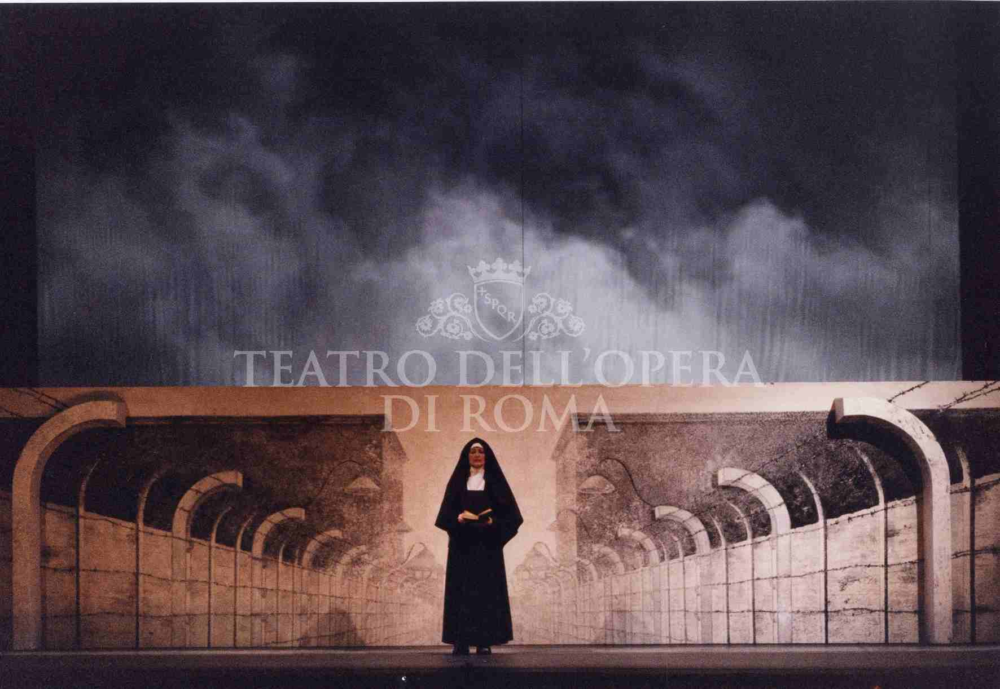
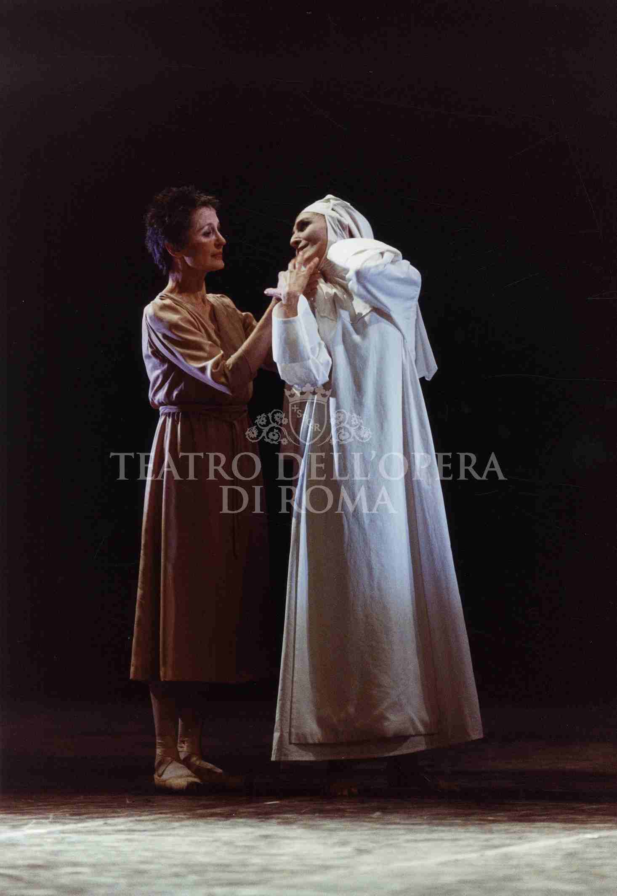
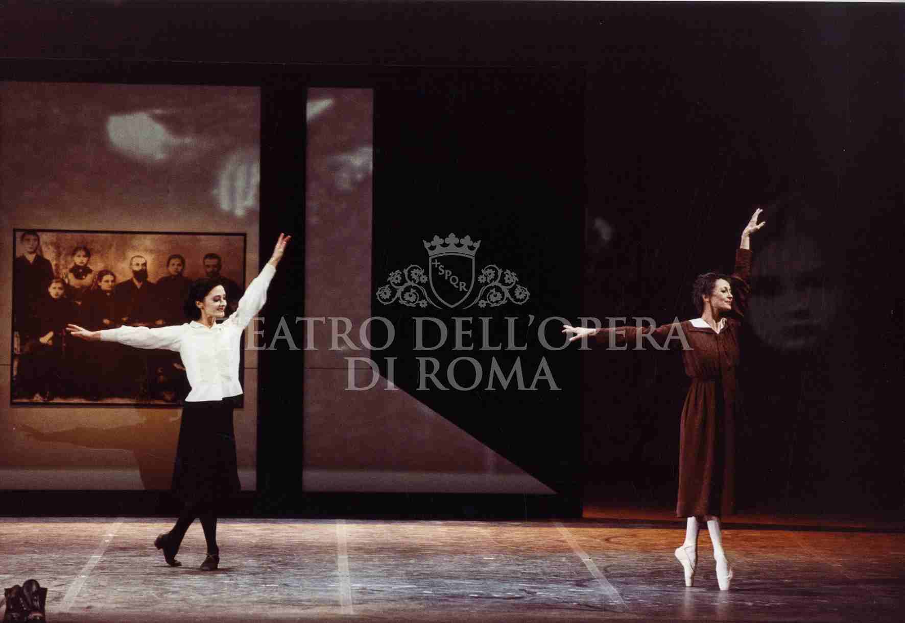

Al Teatro dell'Opera di Roma, nel febbraio 2001, va in scena uno dei progetti più densi e meno raccontati della carriera di Cristian Taraborrelli: Requiem per Edith Stein, balletto in memoria della filosofa-martire Edith Stein — Suor Teresa Benedetta della Croce, uccisa ad Auschwitz nel 1942, canonizzata da Giovanni Paolo II nel 1998 e proclamata patrona d'Europa nel 1999. A interpretarla, l'étoile assoluta della danza italiana: Carla Fracci.
La regia è di Beppe Menegatti, regista storico e compagno d'arte e di vita di Carla Fracci per oltre cinquant'anni; la coreografia, fisica e drammaturgica, è di Fabrizio Monteverde; la direzione musicale è affidata a Vittorio Parisi, che dirige un montaggio cucito tra le pagine di Luciano Berio, Johann Sebastian Bach e Maurice Ravel. Le scene e i costumi sono firmati da Cristian Taraborrelli: un gesto duplice — spazio e abito — per restituire l'aura di una santa filosofa che attraversa il Novecento come un'icona vivente di pensiero e martirio.
Rappresentato in dittico con La Voix Humaine di Francis Poulenc, il Requiem torna in cartellone il 13, 15, 17, 18, 20 e 22 febbraio 2001 per sei recite all'Opera di Roma. È uno dei rari progetti in cui il sodalizio Fracci–Menegatti incontra la coreografia contemporanea italiana e la mano di un giovane scenografo–costumista chiamato a vestire una santa.
At the Teatro dell'Opera di Roma, in February 2001, one of the densest and least told projects of Cristian Taraborrelli's career took the stage: Requiem per Edith Stein, a ballet in memory of the philosopher-martyr Edith Stein — Sister Teresa Benedicta of the Cross, killed at Auschwitz in 1942, canonised by Pope John Paul II in 1998 and proclaimed co-patroness of Europe in 1999. In the title role, the absolute étoile of Italian dance: Carla Fracci.
Direction was by Beppe Menegatti, historic stage director and Carla Fracci's life- and art-companion for more than fifty years; the choreography, physical and dramaturgical, was by Fabrizio Monteverde; the musical direction was entrusted to Vittorio Parisi, who conducted a montage stitched together from pages by Luciano Berio, Johann Sebastian Bach and Maurice Ravel. The sets and costumes are signed by Cristian Taraborrelli: a twofold gesture — space and dress — to give back the aura of a philosopher-saint who crosses the twentieth century as a living icon of thought and martyrdom.
Performed in a double bill with Francis Poulenc's La Voix Humaine, the Requiem returned to the playbill on 13, 15, 17, 18, 20 and 22 February 2001 for six performances at the Opera of Rome. It is one of the rare projects in which the Fracci–Menegatti partnership meets contemporary Italian choreography and the hand of a young set and costume designer called to dress a saint.
Au Teatro dell'Opera di Roma, en février 2001, l'un des projets les plus denses et les moins racontés de la carrière de Cristian Taraborrelli prend la scène : Requiem per Edith Stein, ballet à la mémoire de la philosophe-martyre Edith Stein — Sœur Teresa Benedetta de la Croix, tuée à Auschwitz en 1942, canonisée par Jean-Paul II en 1998 et proclamée copatronne de l'Europe en 1999. Dans le rôle-titre, l'étoile absolue de la danse italienne : Carla Fracci.
La mise en scène est de Beppe Menegatti, metteur en scène historique et compagnon d'art et de vie de Carla Fracci pendant plus de cinquante ans ; la chorégraphie, physique et dramaturgique, est de Fabrizio Monteverde ; la direction musicale est confiée à Vittorio Parisi, qui dirige un montage tissé entre les pages de Luciano Berio, Johann Sebastian Bach et Maurice Ravel. Les décors et les costumes sont signés par Cristian Taraborrelli : un geste double — espace et vêtement — pour restituer l'aura d'une philosophe-sainte qui traverse le XXe siècle comme une icône vivante de pensée et de martyre.
Présenté en diptyque avec La Voix Humaine de Francis Poulenc, le Requiem revient à l'affiche les 13, 15, 17, 18, 20 et 22 février 2001 pour six représentations à l'Opéra de Rome. C'est l'un des rares projets où le sodalité Fracci–Menegatti rencontre la chorégraphie contemporaine italienne et la main d'un jeune scénographe-costumier appelé à vêtir une sainte.
L'Opera — Requiem come dispositivo memoriale
Il Requiem per Edith Stein non è un balletto narrativo nel senso ottocentesco del termine. È un dispositivo memoriale: una soglia tra biografia e liturgia, dove la danza si fa preghiera, e la musica — cucita in montaggio fra Berio, Bach e Ravel — diventa il tessuto stesso del ricordo. La regia di Menegatti e la coreografia di Monteverde lavorano per quadri, non per atti, scegliendo nella vita di Edith le stazioni decisive: la famiglia ebraica, l'incontro con la fenomenologia, la conversione, il velo carmelitano, il treno per Auschwitz.
Il montaggio musicale è la chiave drammaturgica del lavoro. Bach — le pagine sacre, la Passione, il corale — fornisce l'ossatura spirituale, la verticalità della preghiera. Ravel — il ravelliano notturno, l'orchestrazione che brucia con eleganza fredda — entra nei pieghi del lutto familiare ebraico, l'eleganza ferita di una borghesia mitteleuropea condannata. Berio, infine, irrompe come la voce del Novecento: frammento, citazione, memoria stratificata. La sua scrittura — quella delle Sequenze, della Sinfonia, di Voci — mette il corpo della danzatrice dentro una stratigrafia sonora che è già archeologia del Novecento.
L'abbinamento con La Voix Humaine di Poulenc — monodramma per soprano e telefono, su testo di Cocteau — non è casuale: due donne, due corpi soli sulla scena, due forme di sparizione. Una donna che parla a un amante che non risponde; una donna che danza una santa a cui il Novecento ha tolto la voce. La serata è un'unica meditazione sull'ascolto e sull'assenza.
The Requiem per Edith Stein is not a narrative ballet in the nineteenth-century sense. It is a memorial device: a threshold between biography and liturgy, where dance becomes prayer and music — sewn in montage among Berio, Bach and Ravel — becomes the very fabric of memory. Menegatti's direction and Monteverde's choreography work in tableaux, not in acts, choosing the decisive stations in Edith's life: the Jewish family, the encounter with phenomenology, the conversion, the Carmelite veil, the train to Auschwitz.
The musical montage is the dramaturgical key of the work. Bach — the sacred pages, the Passion, the chorale — provides the spiritual frame, the verticality of prayer. Ravel — the Ravelian nocturne, the orchestration burning with cool elegance — enters the folds of Jewish family mourning, the wounded refinement of a doomed Mitteleuropean bourgeoisie. Berio, finally, breaks in as the voice of the twentieth century: fragment, quotation, stratified memory. His writing — that of the Sequenzas, of Sinfonia, of Voci — places the dancer's body inside a sound stratigraphy that is already an archaeology of the twentieth century.
The pairing with Poulenc's La Voix Humaine — a monodrama for soprano and telephone, on a text by Cocteau — is no accident: two women, two solitary bodies on stage, two forms of disappearance. A woman who speaks to a lover who does not answer; a woman who dances a saint from whom the twentieth century took the voice. The evening becomes a single meditation on listening and on absence.
Le Requiem per Edith Stein n'est pas un ballet narratif au sens du XIXe siècle. C'est un dispositif mémoriel : un seuil entre biographie et liturgie, où la danse devient prière et la musique — cousue en montage entre Berio, Bach et Ravel — devient le tissu même du souvenir. La mise en scène de Menegatti et la chorégraphie de Monteverde travaillent par tableaux, non par actes, en choisissant dans la vie d'Edith les stations décisives : la famille juive, la rencontre avec la phénoménologie, la conversion, le voile carmélitain, le train vers Auschwitz.
Le montage musical est la clé dramaturgique de l'œuvre. Bach — les pages sacrées, la Passion, le choral — fournit l'ossature spirituelle, la verticalité de la prière. Ravel — le nocturne ravélien, l'orchestration qui brûle d'une élégance froide — entre dans les plis du deuil familial juif, le raffinement blessé d'une bourgeoisie mitteleuropéenne condamnée. Berio, enfin, fait irruption comme la voix du XXe siècle : fragment, citation, mémoire stratifiée. Son écriture — celle des Sequenze, de la Sinfonia, de Voci — place le corps de la danseuse dans une stratigraphie sonore qui est déjà une archéologie du XXe siècle.
L'association avec La Voix Humaine de Poulenc — monodrame pour soprano et téléphone, sur un texte de Cocteau — n'est pas un hasard : deux femmes, deux corps seuls en scène, deux formes de disparition. Une femme qui parle à un amant qui ne répond pas ; une femme qui danse une sainte à qui le XXe siècle a ôté la voix. La soirée devient une seule méditation sur l'écoute et sur l'absence.
Edith Stein — Filosofa e Martire
Edith Stein nasce a Breslavia il 12 ottobre 1891, ultima di undici figli in una famiglia ebrea osservante. La madre Auguste, vedova precoce, gestisce con autorità il commercio di legname di famiglia: è nella sua casa che Edith impara l'etica del lavoro e l'intransigenza della preghiera. Studentessa brillantissima, si dichiara atea adolescente, e nel 1913 si trasferisce a Göttingen per seguire le lezioni di Edmund Husserl, fondatore della fenomenologia. Si laurea con lui summa cum laude nel 1916 con una tesi sull'Empatia — lo studio dell'esperienza dell'altro come fondamento dell'intersoggettività. Diventerà assistente di Husserl, prima donna ammessa a quel ruolo, e in dialogo con Max Scheler e Adolf Reinach.
Nel 1921, leggendo in una notte intera l'autobiografia di Teresa d'Avila, Edith si converte al cattolicesimo. Si fa battezzare il primo gennaio 1922. Per dodici anni insegna nelle scuole cattoliche tedesche e firma opere di sintesi tra fenomenologia e tomismo (Essere finito ed essere eterno) che la collocano tra i più rigorosi pensatori del Novecento. Quando le leggi razziali naziste le interdicono ogni cattedra, nel 1933 entra al Carmelo di Colonia e prende il nome di Suor Teresa Benedetta della Croce. Nel 1938, per protezione, viene trasferita al Carmelo olandese di Echt.
Il 2 agosto 1942, dopo che i vescovi olandesi avevano denunciato pubblicamente la persecuzione antisemita, le SS arrestano per rappresaglia tutti i religiosi cattolici di origine ebraica. Edith e la sorella Rosa vengono caricate sul treno per Auschwitz: muore in camera a gas il 9 agosto 1942. Beatificata da Giovanni Paolo II nel 1987, viene canonizzata l'11 ottobre 1998 e proclamata compatrona d'Europa il 1° ottobre 1999, accanto a Caterina da Siena e a Brigida di Svezia. Il balletto di Roma 2001 nasce a soli tre anni dalla canonizzazione: è uno dei primi grandi tributi laico-religiosi della cultura italiana alla santa filosofa.
Edith Stein was born in Breslau on 12 October 1891, the youngest of eleven children in an observant Jewish family. Her mother Auguste, widowed early, ran the family's timber business with authority: in her house Edith learnt the work ethic and the intransigence of prayer. A brilliant student, she declared herself an atheist as a teenager, and in 1913 moved to Göttingen to follow the lectures of Edmund Husserl, founder of phenomenology. She graduated with him summa cum laude in 1916 with a dissertation on Empathy — the study of the experience of the other as the foundation of intersubjectivity. She became Husserl's assistant, the first woman admitted to that role, in dialogue with Max Scheler and Adolf Reinach.
In 1921, reading the autobiography of Teresa of Ávila through one entire night, Edith converted to Catholicism. She was baptised on 1 January 1922. For twelve years she taught in German Catholic schools and signed works of synthesis between phenomenology and Thomism (Finite and Eternal Being) which place her among the most rigorous thinkers of the twentieth century. When the Nazi racial laws barred her from every academic chair, in 1933 she entered the Carmel of Cologne and took the name Sister Teresa Benedicta of the Cross. In 1938, for her protection, she was transferred to the Dutch Carmel of Echt.
On 2 August 1942, after the Dutch bishops had publicly denounced anti-Semitic persecution, the SS arrested in retaliation all Catholic religious of Jewish origin. Edith and her sister Rosa were loaded onto the train for Auschwitz: she died in the gas chamber on 9 August 1942. Beatified by John Paul II in 1987, she was canonised on 11 October 1998 and proclaimed co-patroness of Europe on 1 October 1999, alongside Catherine of Siena and Bridget of Sweden. The Rome ballet of 2001 was born just three years after the canonisation: it is one of the first great secular-religious tributes by Italian culture to the philosopher-saint.
Edith Stein naît à Breslau le 12 octobre 1891, dernière de onze enfants dans une famille juive pratiquante. Sa mère Auguste, veuve précoce, dirige avec autorité le commerce familial de bois : c'est dans cette maison qu'Edith apprend l'éthique du travail et l'intransigeance de la prière. Élève brillantissime, elle se déclare athée adolescente, et en 1913 part à Göttingen pour suivre les cours d'Edmund Husserl, fondateur de la phénoménologie. Elle obtient sous sa direction le doctorat summa cum laude en 1916 avec une thèse sur l'Empathie — l'étude de l'expérience d'autrui comme fondement de l'intersubjectivité. Elle deviendra l'assistante de Husserl, première femme admise à ce poste, en dialogue avec Max Scheler et Adolf Reinach.
En 1921, en lisant en une seule nuit l'autobiographie de Thérèse d'Avila, Edith se convertit au catholicisme. Elle est baptisée le 1er janvier 1922. Pendant douze ans elle enseigne dans les écoles catholiques allemandes et signe des œuvres de synthèse entre phénoménologie et thomisme (L'Être fini et l'Être éternel) qui la placent parmi les penseurs les plus rigoureux du XXe siècle. Quand les lois raciales nazies lui interdisent toute chaire universitaire, en 1933 elle entre au Carmel de Cologne et prend le nom de Sœur Teresa Benedetta de la Croix. En 1938, pour la protéger, elle est transférée au Carmel néerlandais d'Echt.
Le 2 août 1942, après que les évêques néerlandais eurent publiquement dénoncé la persécution antisémite, les SS arrêtèrent par représailles tous les religieux catholiques d'origine juive. Edith et sa sœur Rosa sont chargées dans le train pour Auschwitz : elle meurt en chambre à gaz le 9 août 1942. Béatifiée par Jean-Paul II en 1987, elle est canonisée le 11 octobre 1998 et proclamée copatronne de l'Europe le 1er octobre 1999, aux côtés de Catherine de Sienne et de Brigitte de Suède. Le ballet romain de 2001 naît à seulement trois ans de la canonisation : c'est l'un des premiers grands hommages laïco-religieux de la culture italienne à la philosophe-sainte.
Carla Fracci — L'Étoile che danza Edith
Carla Fracci (Milano, 20 agosto 1936 – Milano, 27 maggio 2021) è la più grande étoile italiana del Novecento. Figlia di un tranviere e di un'operaia, entra alla Scuola di Ballo della Scala nel 1946 e ne esce diplomata nel 1954. Nel 1958 è già prima ballerina, e nel 1961 ottiene il titolo di étoile. La sua Giselle, danzata per la prima volta al Festival dei Due Mondi di Spoleto nel 1958 con Erik Bruhn, è entrata nel mito: la rivista «Dance Magazine» la consacrerà come una delle dodici migliori interpreti di sempre del ruolo titolo. Negli anni Sessanta e Settanta diventa una stella internazionale, ospite fissa dell'American Ballet Theatre, partner di Rudolf Nureyev, Vladimir Vasiliev, Henning Kronstam.
Ma ciò che rende Fracci unica non è solo la tecnica: è il tragitto verso il personaggio. Sceglie ruoli drammatici dove la danza si fa narrazione — Giselle, Giulietta, Francesca da Rimini, Manon, Nina (La belle au bois dormant), e tutta la galleria delle eroine ottocentesche. Nei decenni successivi accetta sfide d'autore: Camille Claudel, Eleonora Duse, e questa Edith Stein del 2001 — una santa filosofa, ruolo difficilissimo per la danza, perché richiede di portare in scena un'idea oltre che un corpo.
Il sodalizio con Beppe Menegatti, sposato nel 1964 e suo regista per oltre cinquant'anni, è la chiave di tutta la maturità artistica di Fracci. Insieme costruiscono un repertorio di balletti drammaturgici, spesso costruiti attorno a figure storiche femminili. Roma 2001 è uno dei vertici di questa traiettoria: a sessantacinque anni, Fracci porta sul palco dell'Opera la fragilità e la verticalità di una donna che ha pensato Dio dalla cattedra prima di morire ad Auschwitz. La sua interpretazione — sobria, scolpita, mai sentimentale — trasforma il balletto in icona.
Carla Fracci (Milan, 20 August 1936 – Milan, 27 May 2021) is the greatest Italian étoile of the twentieth century. The daughter of a tram driver and a factory worker, she entered La Scala's Ballet School in 1946 and graduated in 1954. By 1958 she was already prima ballerina, and in 1961 she earned the title of étoile. Her Giselle, first danced at the Festival of Two Worlds in Spoleto in 1958 with Erik Bruhn, has entered legend: Dance Magazine would consecrate her among the twelve greatest ever interpreters of the title role. In the 1960s and 1970s she became an international star, a regular guest of American Ballet Theatre, partner of Rudolf Nureyev, Vladimir Vasiliev and Henning Kronstam.
But what makes Fracci unique is not only technique: it is the trajectory toward the character. She chose dramatic roles in which dance becomes narrative — Giselle, Juliet, Francesca da Rimini, Manon, Aurora — and the entire gallery of nineteenth-century heroines. In later decades she accepted author-driven challenges: Camille Claudel, Eleonora Duse, and this Edith Stein of 2001 — a philosopher-saint, an extremely difficult role for dance, because it demands bringing onto the stage an idea as well as a body.
The partnership with Beppe Menegatti, whom she married in 1964 and who directed her for over fifty years, is the key to all of Fracci's artistic maturity. Together they built a repertoire of dramaturgical ballets, often constructed around historical female figures. Rome 2001 is one of the high points of this arc: at sixty-five, Fracci brings onto the Opera's stage the fragility and the verticality of a woman who thought God from the lectern before dying at Auschwitz. Her performance — sober, sculpted, never sentimental — turns the ballet into icon.
Carla Fracci (Milan, 20 août 1936 – Milan, 27 mai 2021) est la plus grande étoile italienne du XXe siècle. Fille d'un conducteur de tramway et d'une ouvrière, elle entre à l'École de Ballet de la Scala en 1946 et en sort diplômée en 1954. Dès 1958 elle est première ballerine et obtient en 1961 le titre d'étoile. Sa Giselle, dansée pour la première fois au Festival des Deux Mondes de Spolète en 1958 avec Erik Bruhn, est entrée dans le mythe : la revue Dance Magazine la consacrera parmi les douze plus grandes interprètes de tous les temps du rôle-titre. Dans les années 1960 et 1970, elle devient une star internationale, invitée régulière de l'American Ballet Theatre, partenaire de Rudolf Noureev, Vladimir Vassiliev, Henning Kronstam.
Mais ce qui rend Fracci unique n'est pas seulement la technique : c'est le trajet vers le personnage. Elle choisit des rôles dramatiques où la danse devient narration — Giselle, Juliette, Francesca da Rimini, Manon, Aurore — et toute la galerie des héroïnes du XIXe siècle. Dans les décennies suivantes, elle accepte des défis d'auteur : Camille Claudel, Eleonora Duse, et cette Edith Stein de 2001 — philosophe-sainte, rôle extrêmement difficile pour la danse, parce qu'il exige de porter sur scène une idée autant qu'un corps.
Le sodalité avec Beppe Menegatti, épousé en 1964 et son metteur en scène pendant plus de cinquante ans, est la clé de toute la maturité artistique de Fracci. Ensemble ils construisent un répertoire de ballets dramaturgiques, souvent bâtis autour de figures féminines historiques. Rome 2001 est l'un des sommets de cette trajectoire : à soixante-cinq ans, Fracci apporte sur le plateau de l'Opéra la fragilité et la verticalité d'une femme qui a pensé Dieu depuis la chaire avant de mourir à Auschwitz. Son interprétation — sobre, sculptée, jamais sentimentale — transforme le ballet en icône.
La Visione — Scene e costumi per la santa
Per il Requiem, Cristian Taraborrelli firma sia le scene sia i costumi: il gesto totale di chi disegna lo spazio e l'abito come due voci della stessa partitura visiva. La sfida è rappresentare una santa filosofa senza cadere né nell'agiografia né nella citazione storica. Lo spazio scenico evita ogni illustrazione: non c'è il Carmelo, non c'è Auschwitz, non c'è l'aula universitaria di Göttingen. C'è invece una soglia — una camera mentale, una stanza dell'anima — in cui le stazioni della vita di Edith appaiono come apparizioni: arredi che entrano e escono, oggetti-feticcio (un libro, un velo, una valigia), superfici che cambiano nella luce.
I costumi sono il vero cuore del lavoro. Per Edith/Fracci, Taraborrelli costruisce una progressione di abiti che attraversa le età e le identità della santa: l'abito borghese della giovane studentessa ebrea, l'abito severo della docente, l'abito monastico del Carmelo, infine il velo bianco e la croce di legno della suora carmelitana. Ogni passaggio è una sottrazione, una spoliazione: come se ogni cambio d'abito togliesse il mondo invece di aggiungerlo. La paletta cromatica — bianchi, neri, grigi, qualche tocco di marrone monastico — rifiuta ogni decorativismo. La famiglia (madre, padre, sorella Edwige) si veste invece dei colori caldi della borghesia ebraica europea di inizio secolo: ocra, bordeaux, verde scuro — il colore di un mondo che sta per essere bruciato.
L'idea sottesa al disegno costumistico è quella che Edith Stein stessa ha teorizzato nelle sue pagine sull'empatia: l'abito non serve a rivestire un corpo, serve a permettere all'altro di riconoscerlo. Vestire una santa significa permettere allo spettatore di sentirla. Per questo, in una scelta che diventa la cifra del lavoro, il costume di scena di Edith nel quadro finale — quello del treno per Auschwitz — è il più semplice di tutti: una tunica bianca, scalza. Non c'è più rappresentazione, c'è soltanto presenza.
For the Requiem, Cristian Taraborrelli signs both the sets and the costumes: the total gesture of one who draws space and dress as two voices of the same visual score. The challenge is to represent a philosopher-saint without falling either into hagiography or into historical quotation. The scenic space refuses all illustration: there is no Carmel, there is no Auschwitz, there is no Göttingen lecture hall. There is instead a threshold — a mental chamber, a room of the soul — in which the stations of Edith's life appear as apparitions: furnishings that enter and leave, fetish-objects (a book, a veil, a suitcase), surfaces that change in the light.
The costumes are the true heart of the work. For Edith/Fracci, Taraborrelli builds a progression of dresses crossing the saint's ages and identities: the bourgeois dress of the young Jewish student, the severe dress of the lecturer, the monastic habit of the Carmel, finally the white veil and wooden cross of the Carmelite sister. Each passage is a subtraction, a stripping away: as if every change of dress took the world away instead of adding to it. The chromatic palette — whites, blacks, greys, a few touches of monastic brown — refuses all decorativism. The family (mother, father, sister Edwige) by contrast wears the warm colours of the European Jewish bourgeoisie of the early twentieth century: ochres, burgundies, deep greens — the colour of a world that is about to be burnt.
The idea behind the costume design is the one Edith Stein herself theorised in her pages on empathy: dress does not serve to clothe a body, it serves to allow the other to recognise it. To dress a saint means to allow the spectator to feel her. For this reason, in a choice that becomes the signature of the work, Edith's stage costume in the final tableau — that of the train to Auschwitz — is the simplest of all: a white tunic, barefoot. There is no more representation, there is only presence.
Pour le Requiem, Cristian Taraborrelli signe à la fois les décors et les costumes : le geste total de celui qui dessine l'espace et le vêtement comme deux voix de la même partition visuelle. Le défi est de représenter une philosophe-sainte sans tomber ni dans l'hagiographie ni dans la citation historique. L'espace scénique refuse toute illustration : il n'y a pas le Carmel, il n'y a pas Auschwitz, il n'y a pas l'amphithéâtre de Göttingen. Il y a au contraire un seuil — une chambre mentale, une pièce de l'âme — où les stations de la vie d'Edith apparaissent comme des apparitions : mobiliers qui entrent et sortent, objets-fétiches (un livre, un voile, une valise), surfaces qui changent dans la lumière.
Les costumes sont le véritable cœur de l'œuvre. Pour Edith/Fracci, Taraborrelli construit une progression de robes qui traverse les âges et les identités de la sainte : la robe bourgeoise de la jeune étudiante juive, la robe sévère de l'enseignante, l'habit monastique du Carmel, enfin le voile blanc et la croix de bois de la sœur carmélitaine. Chaque passage est une soustraction, un dépouillement : comme si chaque changement d'habit retirait le monde au lieu de l'ajouter. La palette chromatique — blancs, noirs, gris, quelques touches de brun monastique — refuse tout décorativisme. La famille (mère, père, sœur Edwige) porte au contraire les couleurs chaudes de la bourgeoisie juive européenne du début du siècle : ocre, bordeaux, vert sombre — la couleur d'un monde qui est sur le point d'être brûlé.
L'idée qui sous-tend la conception costumière est celle qu'Edith Stein elle-même a théorisée dans ses pages sur l'empathie : l'habit ne sert pas à revêtir un corps, il sert à permettre à l'autre de le reconnaître. Vêtir une sainte signifie permettre au spectateur de la sentir. Pour cela, dans un choix qui devient la signature de l'œuvre, le costume de scène d'Edith dans le tableau final — celui du train pour Auschwitz — est le plus simple de tous : une tunique blanche, pieds nus. Il n'y a plus de représentation, il n'y a que présence.
Galleria — Foto di scena



Foto © Archivio Teatro dell'Opera di Roma
Curiosità Storiche
Tre anni dalla canonizzazione. Il balletto di Roma va in scena nel febbraio 2001, a soli tre anni dalla canonizzazione di Edith Stein, avvenuta l'11 ottobre 1998 in Piazza San Pietro per mano di Giovanni Paolo II. La cultura italiana ne fa subito un'icona laica e religiosa insieme: la santa ebrea-cristiana che ha pensato l'Europa prima che l'Europa la uccidesse.
Patrona d'Europa, 1999. Il 1° ottobre 1999, con la lettera apostolica Spes Aedificandi, Giovanni Paolo II proclama Edith Stein compatrona d'Europa insieme a Santa Brigida di Svezia e Santa Caterina da Siena. Il balletto del 2001 nasce dunque all'ombra di una scelta culturale precisa: dare all'Europa post-Maastricht una santa che fosse anche filosofa, ebrea e martire.
L'accoppiata con La Voix Humaine. All'Opera di Roma il Requiem è rappresentato in dittico con La Voix Humaine di Francis Poulenc (1958), monodramma per soprano e orchestra su testo di Jean Cocteau. Una donna sola al telefono e una santa sola davanti al Novecento: la serata diventa una doppia meditazione sull'assenza, sulla voce, sull'abbandono.
Sodalizio Fracci–Menegatti. Carla Fracci e Beppe Menegatti si sposano nel 1964 e collaborano artisticamente per più di mezzo secolo, fino alla scomparsa di lui nel 2020. Beppe firma la regia di quasi tutti i balletti drammaturgici di Carla degli ultimi quarant'anni: il Requiem per Edith Stein è uno degli esempi più alti di questa autoria condivisa, in cui la danzatrice si fa interprete del pensiero del regista, e il regista si fa scrittore del corpo della danzatrice.
Il montaggio musicale Berio–Bach–Ravel. La partitura del balletto non è un'opera originale, è un montaggio: una pratica tipica della danza contemporanea italiana di fine Novecento. Bach fornisce la verticalità sacra, Ravel le penombre del lutto borghese ebraico, Berio — con le sue Sequenze e i lavori vocali — introduce la frantumazione novecentesca. Il direttore Vittorio Parisi, specialista del repertorio del Novecento, cuce le tre voci in una drammaturgia sonora coerente.
Sei recite, sei stazioni. Il Requiem torna in cartellone per sei sere — 13, 15, 17, 18, 20, 22 febbraio 2001. Numero non casuale: nella tradizione liturgica le stazioni del cammino della Croce sono quattordici, ma le sue letture essenziali sono spesso ridotte a sei o sette. La replica multipla diventa il rito di un percorso, non lo spettacolo di una serata.
Three years after the canonisation. The Roman ballet was staged in February 2001, just three years after the canonisation of Edith Stein, which took place on 11 October 1998 in St Peter's Square at the hand of John Paul II. Italian culture immediately made of her a secular and religious icon at once: the Jewish-Christian saint who thought Europe before Europe killed her.
Co-patroness of Europe, 1999. On 1 October 1999, with the apostolic letter Spes Aedificandi, John Paul II proclaimed Edith Stein co-patroness of Europe alongside Saint Bridget of Sweden and Saint Catherine of Siena. The 2001 ballet is therefore born in the shadow of a precise cultural choice: giving post-Maastricht Europe a saint who was also a philosopher, Jewish and a martyr.
The pairing with La Voix Humaine. At the Opera of Rome the Requiem is performed in a double bill with Francis Poulenc's La Voix Humaine (1958), a monodrama for soprano and orchestra on a text by Jean Cocteau. A woman alone on the phone and a saint alone before the twentieth century: the evening becomes a double meditation on absence, on voice, on abandonment.
The Fracci–Menegatti partnership. Carla Fracci and Beppe Menegatti married in 1964 and collaborated artistically for more than half a century, until his death in 2020. Beppe signed the direction of almost all of Carla's dramaturgical ballets of the last forty years: the Requiem per Edith Stein is one of the highest examples of this shared authorship, in which the dancer becomes the interpreter of the director's thought, and the director becomes the writer of the dancer's body.
The Berio–Bach–Ravel musical montage. The score of the ballet is not an original work, it is a montage: a typical practice of late twentieth-century Italian contemporary dance. Bach provides sacred verticality, Ravel the half-shadows of Jewish bourgeois mourning, Berio — with his Sequenze and vocal works — introduces twentieth-century shattering. Conductor Vittorio Parisi, a specialist of twentieth-century repertoire, sews the three voices into a coherent sound dramaturgy.
Six performances, six stations. The Requiem returned to the playbill for six evenings — 13, 15, 17, 18, 20, 22 February 2001. The number is not accidental: in the liturgical tradition the stations of the Way of the Cross are fourteen, but their essential readings are often reduced to six or seven. The repeated performance becomes the ritual of a path, not the spectacle of a single evening.
Trois ans après la canonisation. Le ballet romain est mis en scène en février 2001, à seulement trois ans de la canonisation d'Edith Stein, intervenue le 11 octobre 1998 sur la place Saint-Pierre par la main de Jean-Paul II. La culture italienne en fait immédiatement une icône laïque et religieuse à la fois : la sainte judéo-chrétienne qui a pensé l'Europe avant que l'Europe ne la tue.
Copatronne de l'Europe, 1999. Le 1er octobre 1999, par la lettre apostolique Spes Aedificandi, Jean-Paul II proclame Edith Stein copatronne de l'Europe aux côtés de Sainte Brigitte de Suède et de Sainte Catherine de Sienne. Le ballet de 2001 naît donc à l'ombre d'un choix culturel précis : donner à l'Europe post-Maastricht une sainte qui fût aussi philosophe, juive et martyre.
L'association avec La Voix Humaine. À l'Opéra de Rome, le Requiem est représenté en diptyque avec La Voix Humaine de Francis Poulenc (1958), monodrame pour soprano et orchestre sur un texte de Jean Cocteau. Une femme seule au téléphone et une sainte seule devant le XXe siècle : la soirée devient une double méditation sur l'absence, sur la voix, sur l'abandon.
Sodalité Fracci–Menegatti. Carla Fracci et Beppe Menegatti se marient en 1964 et collaborent artistiquement pendant plus d'un demi-siècle, jusqu'à la disparition de ce dernier en 2020. Beppe signe la mise en scène de presque tous les ballets dramaturgiques de Carla des quarante dernières années : le Requiem per Edith Stein est l'un des plus hauts exemples de cette écriture partagée, où la danseuse devient l'interprète de la pensée du metteur en scène, et le metteur en scène devient l'écrivain du corps de la danseuse.
Le montage musical Berio–Bach–Ravel. La partition du ballet n'est pas une œuvre originale, c'est un montage : pratique typique de la danse contemporaine italienne de la fin du XXe siècle. Bach fournit la verticalité sacrée, Ravel les pénombres du deuil bourgeois juif, Berio — avec ses Sequenze et ses œuvres vocales — introduit la fragmentation du XXe siècle. Le chef Vittorio Parisi, spécialiste du répertoire du XXe siècle, coud les trois voix en une dramaturgie sonore cohérente.
Six représentations, six stations. Le Requiem revient à l'affiche pour six soirées — 13, 15, 17, 18, 20, 22 février 2001. Le nombre n'est pas anodin : dans la tradition liturgique, les stations du chemin de la Croix sont quatorze, mais leurs lectures essentielles se réduisent souvent à six ou sept. La reprise multiple devient le rite d'un parcours, et non le spectacle d'une seule soirée.
I Collaboratori
Regia
Beppe Menegatti
Regista teatrale e d'opera (Firenze, 1929 – Roma, 2020), assistente di Luchino Visconti negli anni Cinquanta a Spoleto e a Milano. Sposa Carla Fracci nel 1964 e con lei costruisce un'autoria condivisa che attraversa cinquant'anni: dalle riletture dei grandi balletti romantici alle drammaturgie originali su figure femminili storiche — Camille Claudel, Eleonora Duse, Edith Stein. La sua regia è sempre letteraria, ricca di citazioni teatrali e cinematografiche, attenta alla parola scenica oltre che al gesto. Per il Requiem coordina coreografia, scenografia e drammaturgia musicale in un unicum spirituale che è insieme balletto, oratorio e meditazione.
Coreografia
Fabrizio Monteverde
Coreografo italiano (Roma, 1958), tra le voci più rappresentative della danza d'autore italiana. Storica collaborazione con il Balletto di Toscana diretto da Cristina Bozzolini, per cui crea spettacoli di forte impronta drammatica e letteraria: Romeo e Giulietta, Carmen, La Sagra della Primavera. Il suo linguaggio mescola tecnica accademica e contemporaneità, gesto e teatro fisico. Per il Requiem per Edith Stein firma una scrittura coreografica per quadri, dove la danza si fa stazione e la stazione si fa preghiera.
Direttore d'orchestra
Vittorio Parisi
Direttore d'orchestra milanese, specialista del repertorio del Novecento e della musica contemporanea. Diplomato al Conservatorio Verdi di Milano, perfeziona il suo lavoro con Franco Ferrara, e debutta presto in podi internazionali. Ha diretto Berio, Maderna, Donatoni, Sciarrino, Ligeti, Schnittke. Per il Requiem per Edith Stein il compito è particolarmente delicato: cucire in tempo reale tre lingue musicali distantissime — barocco bachiano, impressionismo ravelliano, decostruzione beriana — e renderle un'unica voce interiore. Lo fa con un controllo di tensione che la critica romana del 2001 segnalò come una delle ragioni principali del successo della serata.
Étoile — Edith Stein
Carla Fracci
Vedi sezione dedicata: il più grande nome della danza italiana del Novecento, étoile della Scala, partner di Nureyev, Vasiliev, Bruhn. Dal 2000 al 2010 direttrice del Corpo di Ballo del Teatro dell'Opera di Roma. Il Requiem per Edith Stein del 2001 è uno dei suoi primi grandi titoli da direttrice del Ballo dell'Opera: una scelta artistica e morale insieme.
Direction
Beppe Menegatti
Stage and opera director (Florence, 1929 – Rome, 2020), assistant to Luchino Visconti in the 1950s in Spoleto and Milan. He married Carla Fracci in 1964 and built with her a shared authorship spanning fifty years: from rereadings of the great Romantic ballets to original dramaturgies on historical female figures — Camille Claudel, Eleonora Duse, Edith Stein. His direction is always literary, rich in theatrical and cinematic quotation, attentive to the spoken word as much as to gesture. For the Requiem he coordinates choreography, scenography and musical dramaturgy into a spiritual unicum that is at once ballet, oratorio and meditation.
Choreography
Fabrizio Monteverde
Italian choreographer (Rome, 1958), among the most representative voices of Italian author-driven dance. A long-standing collaboration with the Balletto di Toscana directed by Cristina Bozzolini, for which he creates productions of strong dramatic and literary imprint: Romeo and Juliet, Carmen, The Rite of Spring. His language mixes academic technique and contemporaneity, gesture and physical theatre. For the Requiem per Edith Stein he signs a choreographic writing in tableaux, where dance becomes station and station becomes prayer.
Conductor
Vittorio Parisi
Milanese conductor, specialist of twentieth-century and contemporary music. A graduate of the Conservatorio Verdi in Milan, he perfected his work with Franco Ferrara and debuted early on international podiums. He has conducted Berio, Maderna, Donatoni, Sciarrino, Ligeti, Schnittke. For the Requiem per Edith Stein the task is particularly delicate: to sew together in real time three radically distant musical languages — Bachian Baroque, Ravelian impressionism, Berian deconstruction — and turn them into a single inner voice. He does so with a control of tension that the Roman press of 2001 noted as one of the main reasons for the success of the evening.
Étoile — Edith Stein
Carla Fracci
See dedicated section: the greatest name in twentieth-century Italian dance, étoile of La Scala, partner of Nureyev, Vasiliev and Bruhn. From 2000 to 2010 she directed the Corps de Ballet of the Teatro dell'Opera di Roma. The 2001 Requiem per Edith Stein is one of her first major titles as director of the Opera Ballet: an artistic and moral choice at once.
Mise en scène
Beppe Menegatti
Metteur en scène de théâtre et d'opéra (Florence, 1929 – Rome, 2020), assistant de Luchino Visconti dans les années 1950 à Spolète et à Milan. Il épouse Carla Fracci en 1964 et bâtit avec elle une écriture partagée qui traverse cinquante ans : des relectures des grands ballets romantiques aux dramaturgies originales sur des figures féminines historiques — Camille Claudel, Eleonora Duse, Edith Stein. Sa mise en scène est toujours littéraire, riche en citations théâtrales et cinématographiques, attentive à la parole scénique autant qu'au geste. Pour le Requiem, il coordonne chorégraphie, scénographie et dramaturgie musicale en un unicum spirituel qui est à la fois ballet, oratorio et méditation.
Chorégraphie
Fabrizio Monteverde
Chorégraphe italien (Rome, 1958), parmi les voix les plus représentatives de la danse d'auteur italienne. Collaboration historique avec le Balletto di Toscana dirigé par Cristina Bozzolini, pour lequel il crée des spectacles à forte empreinte dramatique et littéraire : Roméo et Juliette, Carmen, Le Sacre du printemps. Son langage mêle technique académique et contemporanéité, geste et théâtre physique. Pour le Requiem per Edith Stein il signe une écriture chorégraphique par tableaux, où la danse devient station et la station devient prière.
Chef d'orchestre
Vittorio Parisi
Chef d'orchestre milanais, spécialiste du répertoire du XXe siècle et de la musique contemporaine. Diplômé du Conservatoire Verdi de Milan, il se perfectionne auprès de Franco Ferrara et débute tôt sur les podiums internationaux. Il a dirigé Berio, Maderna, Donatoni, Sciarrino, Ligeti, Schnittke. Pour le Requiem per Edith Stein, la tâche est particulièrement délicate : coudre en temps réel trois langues musicales radicalement distantes — baroque bachien, impressionnisme ravélien, déconstruction berienne — et en faire une seule voix intérieure. Il y parvient avec un contrôle de tension que la critique romaine de 2001 indiqua comme l'une des principales raisons du succès de la soirée.
Étoile — Edith Stein
Carla Fracci
Voir la section dédiée : le plus grand nom de la danse italienne du XXe siècle, étoile de la Scala, partenaire de Noureev, Vassiliev et Bruhn. De 2000 à 2010 directrice du Corps de Ballet du Teatro dell'Opera di Roma. Le Requiem per Edith Stein de 2001 est l'un de ses premiers grands titres comme directrice du Ballet de l'Opéra : un choix à la fois artistique et moral.
Cast Principale
Creative Team
Tags